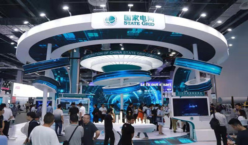
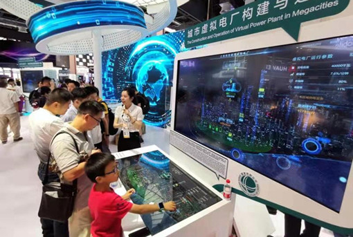

泛在电力物联网在2019世界人工智能大会受到广泛关注
发布时间：2019-09-03 大中小
2019年8月29日-31日，2019世界人工智能大会在上海世博中心和世博展览馆举办。作为大会首批15家战略合作伙伴之一，国家电网公司积极筹办创新应用展、主办“泛在物联 智享未来”分论坛，并冠名赞助全球工业互联网峰会，深度参与大会，向全球展示公司在人工智能技术与泛在电力物联网融合等方面的投入与应用成果，以及绿色电网创新发展的新技术和新理念。

国家电网展区设置在H2厅A117展厅，位于上海世博展览馆H2厅的主干道，占地共180平方米。展区共有14个参展项目，分为客户服务、智慧保电和能源服务三类，项目采用触摸互动的方式展示，提升展现形式科技感和观众体验。
其中，城市虚拟电厂构建与运行、3I红外视觉智检系统和世界会客厅——城市绿色保电最强大脑等项目，特别体现国家电网公司在人工智能技术与泛在电力物联网融合方面的应用成果。

虚拟电厂是国内外首个商业建筑虚拟电厂运营平台，通过5G通信技术、神经网络计算、大数据分析、边缘计算等人工智能技术，将城市商业建筑的分布式资源以多维建模聚合作用，实现用户闲散资源的分类聚合及优化分配，达成与常规发电厂类似的效果。虚拟电厂在保障城市能源安全的基础上，打造能源价值共享新业态，构筑绿色发电新引擎，服务城市绿色低碳发展。目前，公司在上海市黄浦区商业建筑虚拟电厂的成果基础上，正紧锣密鼓开展下一阶段试点研发工作。
3I红外视觉智检系统由公司和复旦大学联手研发，针对当前变电设备红外检测的难点和痛点，在国内外首次采用AI+泛在电力物联网边缘计算及大数据技术的解决方案，实现了“非专业人士成为红外专家”的目标。该系统将深度学习算法与电力设备连接逻辑知识图谱技术相结合，实现了电力设备自动识别、红外缺陷自动诊断等功能，解决了电力红外检测技术门槛高、工作量大、人工检测效率低的痛点，使红外缺陷诊断整体工作效率提高3倍以上，目前已推出第一代样机。
世界会客厅——城市绿色保电最强大脑是公司充分汲取“世博会”和“亚信峰会”保电经验，突破性探索运用电力物联网、人工智能等先进技术，建成的保电“大脑中枢”——全景智慧供电保障系统和绿电指数评价系统。系统主要用于提高供电可靠性，可实现对从上海全网到进博会核心区的供电保障。智慧保电系统解决了以往保电过程中拼时间、拼体力的人海战术对大量人员的依赖，避免了人工巡视间隔内设备故障无法及时处理的问题，通过趋势分析可在故障发生前予以处理。目前，智慧保电系统已在首届中国国际进口博览会保电工作中进行了应用，有效保障了进博会供电安全。
此外，公司还通过营业厅服务机器人、输变电巡检机器人、输电线路AI可视化装置等项目，集中体现红外感知、虚拟现实、机器人、语音图像识别、大数据、云计算、5G通信等泛在电力物联网技术在电网状态全面感知、多源信息高效处理、客户服务便捷灵活方面的应用水平。
今年初，国家电网公司提出“三型两网、世界一流”战略目标，为全面推进“三型两网”建设，加快打造具有全球竞争力的世界一流能源互联网企业，公司进一步强化发展人工智能等新技术及其应用，并取得显著成效。国家电网公司表示，未来也将再接再厉，加快推进泛在电力物联网建设，紧密联系上下游资源和需求，搭建能源互联网生态圈，加速适应社会形态、打造行业生态、培育新兴业态。
信息来源：文汇报